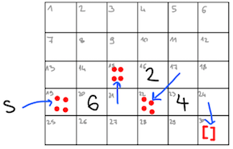
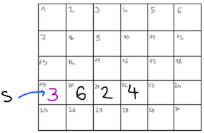
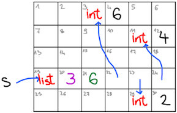

Spremenljive podatkovne strukture#
Podatkovne strukture, ki smo jih v OCamlu spoznali do sedaj, so bile nespremenljive. Res smo govorili, da smo seznamu na začetek dodali glavo, vendar s tem prvotnega seznama nismo spremenili, temveč smo naredili nov seznam, ki je imel starega za rep. V Pythonu smo seznam lahko dejansko spremenili. Na primer, sledeča funkcija f ob vsakem klicu seznam sez razširi z enim elementom:
sez = [1, 2, 3]
def f(x):
sez.append(x)
return len(sez)
def g(x):
return f(x) + f(x)
>>> g(3)
9
>>> f(3) + f(3)
13
>>> g(3)
17
Podobne funkcije v OCamlu sploh (še) ne znamo napisati. Tudi če napišemo nekaj podobnega:
let sez = [1; 2; 3]
let f x =
let sez = x :: sez in
List.length sez
let g x =
f x + f x
val sez : int list = [1; 2; 3]
val f : int -> int = <fun>
val g : int -> int = <fun>
funkcija f ne spremeni seznama sez, temveč naredi nov seznam in ga lokalno poimenuje z istim imenom. Posledično bo ta novi seznam vedno dolžine 4:
g 3
- : int = 8
f 3 + f 3
- : int = 8
g 3
- : int = 8
Reference#
Kot praktičen programski jezik pa OCaml pozna tudi spremenljive podatkovne strukture. Najenostavnejša od njih so reference. Reference imajo tip oblike τ ref in predstavljajo eno samo spremenljivo vrednost tipa τ. Predstavljamo si jo lahko kot sklic (oz. referenco) do nekega prostora v pomnilniku. Novo referenco ustvarimo s funkcijo ref, ki sprejme začetno vrednost, spravljeno v prostoru, in vrne sklic nanj:
ref
- : 'a -> 'a ref = <fun>
let r = ref 20
val r : int ref = {contents = 20}
Sklic r torej kaže na prostor v pomnilniku, v katerem je trenutno shranjena vrednost 20. Če želimo dostopati do trenutne vrednosti reference, uporabimo operacijo !:
(!)
- : 'a ref -> 'a = <fun>
!r + 100
- : int = 120
Če želimo spremeniti vrednost, uporabimo operacijo :=, ki sprejme referenco ter njeno novo vrednost.
(:=)
- : 'a ref -> 'a -> unit = <fun>
Tip rezultata unit nam nakazuje, da funkcija ne vrne ničesar koristnega temveč sproži stranski učinek spremembe pomnilnika.
r := 5
- : unit = ()
!r
- : int = 5
Kljub temu da so seznami v OCamlu nespremenljivi, pa so reference spremenljive, zato lahko z njimi naredimo program, ki se obnaša kot tisti v Pythonu:
let sklic_na_seznam = ref [1; 2; 3]
let f x =
sklic_na_seznam := x :: !sklic_na_seznam;
List.length !sklic_na_seznam
let g x =
f x + f x
val sklic_na_seznam : int list ref = {contents = [1; 2; 3]}
val f : int -> int = <fun>
val g : int -> int = <fun>
Tokrat v funkciji f nismo s pomočjo let definirali nove vrednosti z istim imenom, temveč smo uporabili operacijo := in spremenili vsebino obstoječega sklica.
g 3
- : int = 9
f 3 + f 3
- : int = 13
g 3
- : int = 17
Reference so v resnici samo poseben primer spremenljivih zapisov. Ob definiciji zapisnega tipa v OCamlu lahko namreč nekatera polja s ključno besedo mutable označimo za spremenljiva ter jih potem spreminjamo s pomočjo operacije <-.
type racun = {
lastnik : string;
stevilka : int;
mutable znesek : float;
}
type racun = { lastnik : string; stevilka : int; mutable znesek : float; }
let moj_racun = {
lastnik = "jaz";
stevilka = 27004498;
znesek = 0.0
}
val moj_racun : racun = {lastnik = "jaz"; stevilka = 27004498; znesek = 0.}
moj_racun.znesek
- : float = 0.
moj_racun.znesek <- 1000.0
- : unit = ()
moj_racun.znesek
- : float = 1000.
Reference ter operacije na njih pa bi lahko definirali kot:
type 'a ref = {mutable contents : 'a}
let ref x = {contents = x}
let (!) r = r.contents
let (:=) r x = r.contents <- x
Predstavitev seznamov v pomnilniku#
Videli smo že, da je OCamlov tip list v pomnilniku predstavljen z verižnimi seznami. Vsak seznam je bodisi prazen, bodisi je sestavljen iz glave in repa. Na primer, seznam let s = [6; 2; 4] ustreza predstavitvi

Po pomnilniku seveda ne moremo risati puščic. Namesto tega so celice oštevilčene, kazalci pa so potem samo njihovi naslovi:
s : 19 0 0 0 0 0 0
0 0 0 0 0 0
0 0 1 2 22 0
1 6 15 1 4 30
0 0 0 0 0 0
OCaml pa poleg verižnih seznamov pozna tudi tip array, kjer so podatko predstavljeni s tabelami, torej v zaporednih prostorih v pomnilniku. V tem primeru moramo na začetku tabele podati tudi njeno velikost, da se ve, kje se konča (verižni seznami se končajo, ko kazalec kaže na prazen seznam). Tabele tako kot sezname pišemo v oglate oklepaje, le da dodamo še dve navpični črti. Preden si pogledamo funkcije za delo s tabelami, si oglejmo še njihovo predstavitev v pomnilniku. Tabelo, definirano z let s = [|6; 2; 4|], v pomnilniku predstavimo kot

oziroma natančneje kot
s : 19 0 0 0 0 0 0
0 0 0 0 0 0
0 0 0 0 0 0
3 6 2 4 0 0
0 0 0 0 0 0
Pythonovi seznami so prav tako predstavljeni s tabelami in imajo podobno predstavitev kot tip array v OCamlu. Ena razlika je, da so Pythonove tabele razširljive, zato poleg podatka o velikosti vsebujejo še podatek o rezerviranem prostoru (če ga velikost preseže, Python rezervira večji kos pomnilnika in tabelo prenese vanj). Poleg tega pa je Python dinamičen jezik, zato mora v pomnilniku hraniti še podatke o trenutnem tipu. Torej je slika Pythonovega seznama s = [6, 2, 4] približno taka:

malo bolj natančno pa kot
s : 19 0 0 123 6 0 0
0 0 0 0 123 4
0 0 0 0 0 0
246 3 6 3 29 11
0 0 0 0 123 2
kjer si lahko predstavljamo, da sta na mestih 123 in 246 shranjeni še definiciji razredov int in list. Različne predstavitve v pomnilniku vodijo v različne računske zahtevnosti operacij. Za seznam dolžine \(n\) so časovne zahtevnosti osnovnih operacij sledeče:
operacija |
OCaml |
Python |
OCaml |
|---|---|---|---|
indeksiranje |
O(1) |
O(1) |
O(n) |
dodaj na začetek |
O(n) |
O(n) |
O(1) |
dodaj na konec |
O(n) |
O(1) |
O(n) |
dolžina |
O(1) |
O(1) |
O(n) |
izračun repa |
O(n) |
O(n) |
O(1) |
Tip array#
Tabele v OCamlu so v veliko pogledih podobne seznamom. Tip 'a array predstavlja tabelo elementov tipa 'a, v modulu Array pa so na voljo običajne funkcije:
Array.length [|10; 20; 30|]
- : int = 3
Array.map succ [|10; 20; 30|]
- : int array = [|11; 21; 31|]
Array.make 3 'a'
- : char array = [|'a'; 'a'; 'a'|]
Array.of_list [5; 2; 1; 4; 3; 6; 8; 7]
- : int array = [|5; 2; 1; 4; 3; 6; 8; 7|]
Array.make_matrix 2 2 0
- : int array array = [|[|0; 0|]; [|0; 0|]|]
Tako kot v Pythonu so OCamlove tabele indeksirane in do elementa z indeksom i dostopamo prek tabela.(i):
let t = [|1; 2; 3|]
val t : int array = [|1; 2; 3|]
t.(0)
- : int = 1
t.(2)
- : int = 3
Poleg predstavitve v pomnilniku pa je tip array tudi spremenljiv (sicer ne bi bil preveč uporaben, saj bi že za majhno spremembo morali prekopirati celotno tabelo).
t
- : int array = [|1; 2; 3|]
t.(2) <- 5
- : unit = ()
t
- : int array = [|1; 2; 5|]
Tako imamo pri funkcijah na tabelah vedno dve možnosti. Lahko vrnemo novo tabelo ali spremenimo obstoječo na mestu. Na primer, tabelo lahko obrnemo tako, da naredimo novo, v kateri so elementi ustrezno preštevilčeni:
let vrni_obrnjeno tabela =
let n = Array.length tabela in
Array.init n (fun i -> tabela.(n - i - 1))
val vrni_obrnjeno : 'a array -> 'a array = <fun>
let t = vrni_obrnjeno [|1; 5; 10; 20|]
val t : int array = [|20; 10; 5; 1|]
Pri tem se prvotna tabela ni spremenila:
t
- : int array = [|20; 10; 5; 1|]
Lahko pa tabelo obrnemo tudi na mestu tako, da prvi element zamenjamo z zadnjim, drugega s predzadnjim in tako naprej do sredine. Pri tem si lahko pomagamo tudi z zanko for:
let zamenjaj tabela i j =
let t = tabela.(i) in
tabela.(i) <- tabela.(j);
tabela.(j) <- t
let obrni_na_mestu tabela =
let n = Array.length tabela in
for i = 0 to n / 2 - 1 do
zamenjaj tabela i (n - i - 1)
done
val zamenjaj : 'a array -> int -> int -> unit = <fun>
val obrni_na_mestu : 'a array -> unit = <fun>
let t' = [|3; 33; 333; 3333|]
val t' : int array = [|3; 33; 333; 3333|]
obrni_na_mestu t'
- : unit = ()
Funkcija obrni_na_mestu ni vrnila ničesar, je pa imela stranski učinek, da se je spremenila tabela t':
t'
- : int array = [|3333; 333; 33; 3|]
Zanki for in while#
Kot smo videli, OCaml pozna tudi zanko for, ki pa je v primerjavi s Pythonovo precej omejena. V njej imamo lahko le eno spremenljivko, ki se sprehaja le naraščajoče ali padajoče po zaporednih celih številih. Zanke ne vračajo ničesar, zato tudi zahtevamo, da je njihovo telo tipa unit.
for i = 1 to 9 do
print_endline (string_of_int i)
done
1
2
3
4
5
6
7
8
9
- : unit = ()
for i = 9 downto 1 do
print_endline (string_of_int i)
done
9
8
7
6
5
4
3
2
1
- : unit = ()
Poleg zanke for poznamo tudi zanko while, ki telo tipa unit ponavlja toliko časa, dokler je izpolnjen pogoj tipa bool. Če nočemo neskončne zanke, je koristno, da za pogoj izberemo spremenljiv izraz, npr. tak, ki uporablja reference:
let i = ref 10
val i : int ref = {contents = 10}
while !i > 1 do
decr i;
print_endline (string_of_int !i)
done
9
8
7
6
5
4
3
2
1
- : unit = ()
Fisher-Yatesov algoritem#
Fisher-Yatesov algoritem uporabimo, kadar želimo premešati tabelo. Deluje tako, da postopoma gradi naključno permutacijo prvotnega seznama. Najprej izmed vseh elementov izbere enega za prvo mesto, nato izmed vseh preostalih izbere naslednjega za drugo mesto in tako naprej. Pri tem algoritem vsa števila vodi v eni sami spreminjajoči se tabeli: v levi polovici (do vključno \(i\)-tega elementa) so že delno premešani elementi, v desni polovici (od \(i + 1\)-tega do zadnjega) pa so še neizbrani elementi. V \(i\)-tem koraku izmed vseh neizbranih elementov naključno izberemo enega in ga zamenjamo z \(i\)-tim elementom. Algoritem v OCamlu napišemo kot:
let fisher_yates tabela =
let n = Array.length tabela in
for i = 0 to n - 2 do
let j = i + Random.int (n - i) in
zamenjaj tabela i j
done
val fisher_yates : 'a array -> unit = <fun>
Poglejmo si najprej, zakaj algoritem deluje pravilno, torej da vsako permutacijo dobimo z enako verjetnostjo \(1/n!\). Izberimo si neko permutacijo \(\pi = (\pi_1, \ldots, \pi_n)\). V prvem koraku moramo izmed vseh \(n\) neizbranih indeksov izbrati \(\pi_1\), kar se zgodi z verjetnostjo \(1 / n\). V naslednjem koraku moramo izmed preostalih \(n - 1\) indeksov izbrati \(\pi_2\), kar se zgodi z verjetnostjo \(1 / (n - 1)\). Podobno nadaljujemo vse do koraka \(n - 1\), kjer z verjetnostjo \(1 / 2\) med zadnjima dvema številoma izberemo \(\pi_{n - 1}\). Med neizbranimi elementi ostane samo še \(\pi_n\), ki že leži na zadnjem mestu, na katerem bi moral biti. Torej je verjetnost, da smo izbrali permutacijo \(\pi\) enaka \(\frac{1}{n} \cdot \frac{1}{n - 1} \cdots \frac{1}{2} = 1 / n!\).
Poglejmo si še učinkovitost algoritma. Naredimo \(O(n)\) korakov, na vsakem pa zamenjamo dva elementa, kar lahko storimo v konstantnem času. Skupaj je časovna zahtevnost algoritma enaka \(O(n)\). Hitreje kot to ne gre, saj v manj kot \(n\) korakih ne moremo ustvariti permutacije \(n\) elementov. V nasprotnem primeru bi obstajal element, ki ga v nobenem koraku nismo izbrali, kar pomeni, da nekaterih permutacij ne bi mogli ustvariti.
Če bi si namesto tabele želeli premešati seznam, je najenostavneje, če ga pretvorimo v tabelo, jo premešamo, in nato pretvorimo nazaj v seznam.
Naivni algoritmi za urejanje#
Še bolj uporabno kot premešanje tabele pa je njeno urejanje. Obstajajo trije naivni algoritmi za urejanje tabel, ki jih bomo spoznali v tem poglavju in delujejo v času \(O(n^2)\). V naslednjem poglavju bomo spoznali dva zapletenejša in učinkovitejša algoritma, ki delujeta v času \(O(n \log n)\). A kljub temu, da kvadratna časovna zahtevnost kmalu zahteva svoj davek, so naivni algoritmi dostikrat hitrejši pri kratkih seznamih in jih v praksi dostikrat uporabimo v kombinaciji z naprednejšimi, kadar dolžina seznama pade pod določeno mejo.
Prvi algoritem je urejanje z izbiranjem (oz. selection sort), ki deluje tako, da postopoma izbere najmanjši element in ga postavi na prvo mesto, nato izbere naslednji najmanjši element in ga postavi na drugo mesto, in tako naprej. V OCamlu urejanje z izbiranjem napišemo
let uredi_z_izbiranjem tabela =
let n = Array.length tabela in
for i = 0 to n - 2 do
let indeks_min = ref i in
for j = i + 1 to n - 1 do
if tabela.(j) < tabela.(!indeks_min) then indeks_min := j
done;
zamenjaj tabela i !indeks_min
done
val uredi_z_izbiranjem : 'a array -> unit = <fun>
let t = [|4; 2; 1; 3; 9; 5; 6; 8; 7; 0|] in
uredi_z_izbiranjem t;
t
- : int array = [|0; 1; 2; 3; 4; 5; 6; 7; 8; 9|]
Drugi algoritem deluje tako, da postopoma zamenjuje pare zaporednih elementov, ki so v napačnem vrstnem redu. Če se na tak način postopoma sprehodimo čez vse pare v tabeli, bo največji element priplaval na zadnje mesto, zaradi česar algoritem imenujemo urejanje z mehurčki (oz. bubble sort). Postopek ponovimo na preostalih manjših elementih, s čimer na predzadnje mesto priplava drugi največji element, in tako naprej. V zanko lahko dodamo še pogoj, da se zanka prekine, če v obhodu ni bilo nobenih zamenjav, saj to pomeni, da je tabela že urejena. V OCamlu urejanje z mehurčki napišemo kot:
let uredi_z_mehurcki tabela =
let n = Array.length tabela in
for i = 0 to n - 2 do
for j = 0 to n - i - 2 do
if tabela.(j) > tabela.(j + 1) then
zamenjaj tabela j (j + 1)
done
done
val uredi_z_mehurcki : 'a array -> unit = <fun>
let t = [|4; 2; 1; 3; 9; 5; 6; 8; 7; 0|] in
uredi_z_mehurcki t;
t
- : int array = [|0; 1; 2; 3; 4; 5; 6; 7; 8; 9|]
Tretji algoritem pa je urejanje z vstavljanjem (oz. insertion sort) in deluje tako, kot urejamo karte pri taroku (za tiste, ki jih urejamo). V roki imamo urejene karte in vsakič, ko dobimo novo, jo postavimo na pravo mesto. Pri urejanju tabel nimamo dveh tabel, temveč eno samo, v kateri na levi strani postopoma gradimo urejeni del, na desni pa so še nerazporejeni elementi. V OCamlu urejanje z vstavljanjem napišemo kot:
let uredi_z_vstavljanjem tabela =
let n = Array.length tabela in
for i = 1 to n - 1 do
let x = tabela.(i) in
let j = ref i in
while !j > 0 && tabela.(!j - 1) > x do
tabela.(!j) <- tabela.(!j - 1);
decr j
done;
tabela.(!j) <- x
done
val uredi_z_vstavljanjem : 'a array -> unit = <fun>
let t = [|4; 2; 1; 3; 9; 5; 6; 8; 7; 0|] in
uredi_z_vstavljanjem t;
t
- : int array = [|0; 1; 2; 3; 4; 5; 6; 7; 8; 9|]
Spremenljivka i beleži indeks elementa x, ki mu poskušamo najti mesto v urejenem delu tabele, ki sega od indeksa 0 do vključno indeksa i - 1. Začnemo z i = 1, saj je ne glede na vrednost prvega elementa del tabele od indeksa 0 do 0 vedno urejen. S spremenljivko j se vračamo nazaj po seznamu ter element na mestu j - 1 zamikamo v desno, dokler ne najdemo elementa, ki je večji od x. Na tisti točki z x povozimo element na mestu j - 1, saj je prejšnji element že prekopiran na mesto j. Če bi želeli, bi lahko x tako kot pri urejanju z mehurčki zaporedoma menjali z manjšimi elementi, dokler ne najdemo mesta zanj, vendar bi s tem povečali število pisanj v tabelo.